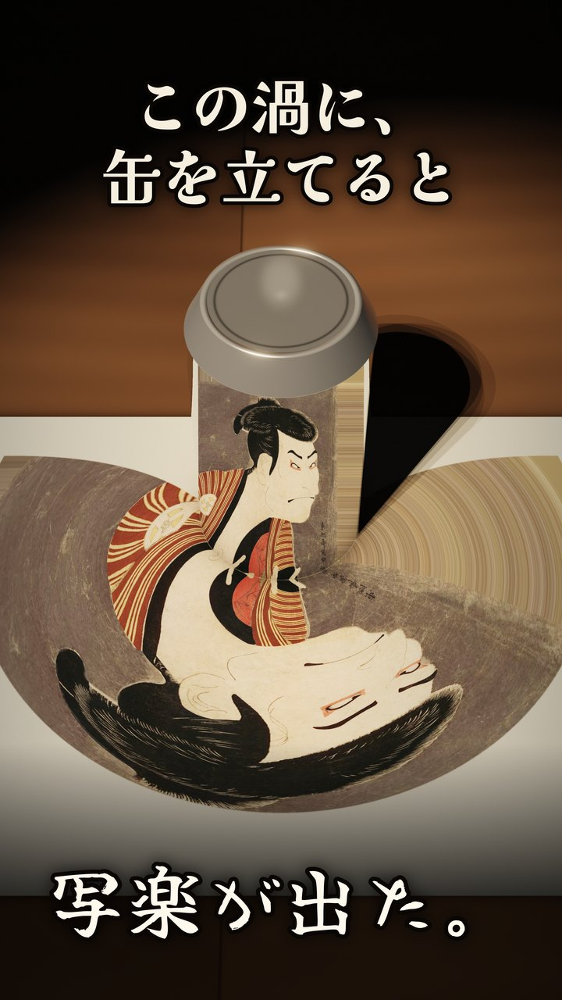
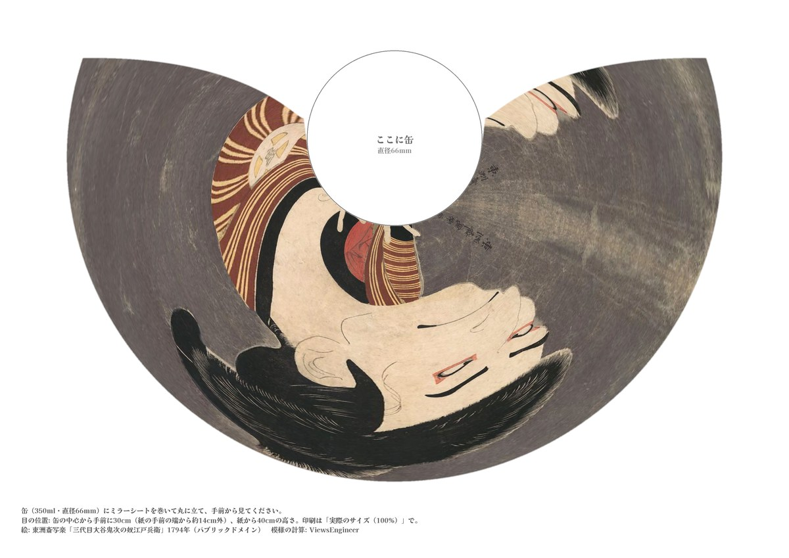

缶に映すと、写楽が出る模様
ぐにゃりと伸びた模様です。印刷された丸に、鏡を巻いた缶を立てて、手前から見てください。缶の中に東洲斎写楽の役者絵が映るように、光の反射を計算して作りました。
左の画像は CG で描いた見本です。実物での確認はこれからで、理屈の上では同じように映るはずです。


動画: YouTube「この渦に、鏡の缶を立てると」
試し方
- PDF を A4・横で、実際のサイズ（100%）で印刷します。「用紙に合わせる」にすると大きさが変わり、顔がゆがみます。
- 350ml の缶（直径 66mm）に、100円ショップなどのミラーシートを巻きます。しわが少ないほど、きれいに映ります。上下ですぼまっていない、直径 66mm のまっすぐな鏡の筒でも同じ計算になります。
- 缶を紙の丸の上に立てます。
- 文字が書いてある側（手前）から、缶の中心から30cmほど手前（紙の手前の端から約14cm外）・紙から40cmほどの高さで見ます。スマホで撮るときも、その位置にカメラを置きます。
見る位置がずれると、顔はゆがみます。片目で見ると合わせやすくなります。缶の下の端（すぼまった所）では像がゆがみます。
どうやって作ったか
目に届く光を、目の側から逆にたどりました。缶の鏡で折り返した光が紙のどこに当たるかを1本ずつ計算し、当たった所に絵のその点の色を置いていくと、この模様になります。A4 の模様1枚で、計算した光の道すじは約1,093万本です。
鏡に映るものを逆にたどって絵をゆがめる方法は「円筒鏡のアナモルフォーズ」と呼ばれ、17世紀ごろから知られています。この模様は、その計算をプログラムで行ったものです。
絵について
東洲斎写楽「三代目大谷鬼次の奴江戸兵衛」（1794年）。パブリックドメインの画像（Wikimedia Commons）を使っています。模様は自由に印刷して使ってください。